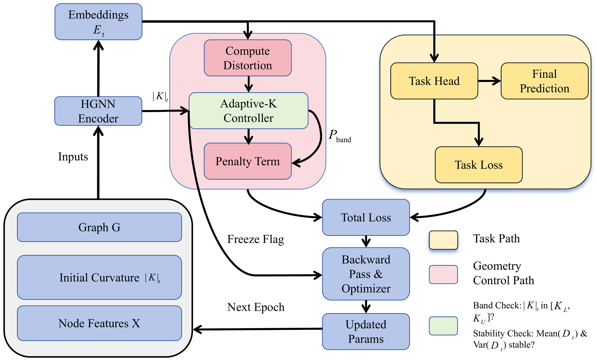

01
Task Saturation
The validation objective reaches a plateau, so further training yields only negligible task gains.
When task performance saturates, geometry still matters. Adaptive-K uses distortion as feedback to stabilize learnable curvature without materially compromising predictive performance.
Paper overview
Treating curvature as a learnable parameter in Hyperbolic Graph Neural Networks (GNNs) has become a useful approach for modeling complex graphs. However, in the standard single-global-curvature setting, improved task performance does not necessarily guarantee geometric fidelity. Our empirical analysis reveals a decoupling between these objectives: without explicit geometric control, the embedding geometry may degrade substantially even after validation performance has largely saturated.
To address this issue, we formulate curvature learning as a distortion-feedback control problem and propose a Distortion-Aware Adaptive Controller. Guided by a curvature-dependent trade-off between geometric fidelity and statistical complexity, the method uses embedding distortion as a feedback signal to regulate curvature during training, improving the stability and reliability of curvature learning while retaining competitive task performance.
Across the evaluated link prediction benchmarks, the proposed controller mitigates late-stage geometric degradation and substantially reduces curvature variance, highlighting the value of explicit geometry-aware feedback in learnable-curvature hyperbolic GNNs.
Core observation
Validation metrics can plateau while the geometry continues to drift. A task-only training signal therefore provides an incomplete view of a learnable-curvature model's state.
The validation objective reaches a plateau, so further training yields only negligible task gains.
Curvature and embedding distortion continue to move after the task metric has stabilized.
Strong predictive performance can conceal a less faithful representation of the graph's intrinsic structure.
Proposed method
Adaptive-K adds a geometry control path to the standard task optimization path. Distortion is monitored online and used to regulate the global learnable curvature.

Embedding stress is periodically measured on a fixed sampled pair set and treated as a direct geometric control signal.
A two-sided quadratic penalty applies a restoring force only when the curvature leaves a calibrated stable band.
Once curvature and distortion satisfy the target stability conditions, curvature updates are frozen to suppress further drift.
Empirical findings
Adaptive-K substantially improves geometric stability in the evaluated single-global-curvature HGCN setting while retaining competitive task performance.
Across the reported benchmarks, Adaptive-K remains competitive with Fixed-K and unconstrained Free-K on ROC AUC and AP.
Adaptive-K records the lowest distortion on PubMed and Airport and consistently reduces curvature variability relative to Free-K.
The study focuses on the standard single-global-curvature HGCN setting; heterogeneous or local-curvature architectures are outside its scope.
| Dataset | Method | ROC AUC (%) ↑ | AP (%) ↑ | Distortion ↓ | Curvature Std. ↓ |
|---|---|---|---|---|---|
| PubMed | Free-K | 95.75 ± 0.08 | 95.67 ± 0.07 | 2.4228 ± 0.0478 | 0.0712 |
| Adaptive-K | 95.55 ± 0.07 | 95.51 ± 0.09 | 0.2617 ± 0.0286 | 0.0121 | |
| Airport | Free-K | 93.49 ± 0.38 | 94.19 ± 0.23 | 0.3804 ± 0.0670 | 0.3294 |
| Adaptive-K | 93.66 ± 0.38 | 94.15 ± 0.26 | 0.2121 ± 0.0219 | 0.0163 | |
| Disease | Free-K | 88.13 ± 0.47 | 84.47 ± 0.27 | 1.3100 ± 0.4088 | 0.0253 |
| Adaptive-K | 88.72 ± 0.33 | 84.67 ± 0.27 | 0.7194 ± 0.0818 | 0.0229 |
Reference
Please cite the journal article below when using the method, figures, or findings.
@article{chen2026task,
title = {When task performance deceives: Task-geometry decoupling in learnable-curvature hyperbolic GNNs},
author = {Chen, Lixian and Wang, Jingchao and Dai, Zhaorong and Liu, Hanqian and Ai, Danxiang and Shi, Yang},
journal = {Neural Networks},
volume = {203},
pages = {109172},
year = {2026},
publisher = {Elsevier},
doi = {10.1016/j.neunet.2026.109172}
}